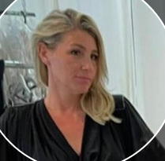

Smadar Elul. Writer and creator, self-published author of children's books in Hebrew and English. Creator of The Octo Bunch series, with titles sold on Amazon and Kindle. I'm looking for a studio to acquire the rights to produce the series. Every episode follows a fixed structure: a repeatable format that is easy to produce and extend.
Watson, my personal assistant in the world of AI agents: a sharp, curious detective with a magnifying glass that misses no detail.
Want to see the series? Book a meeting.
In the meeting I'll present the series, the characters and ways to collaborate.